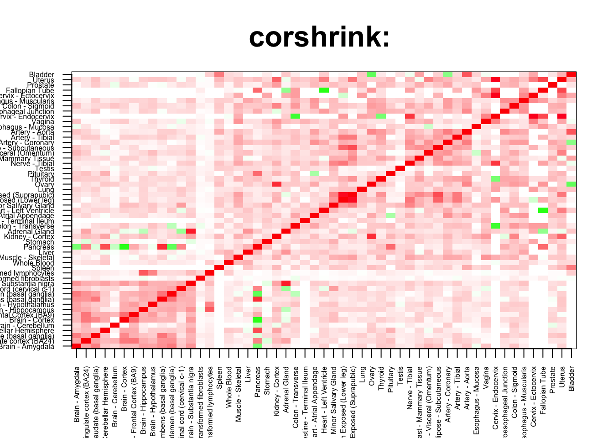
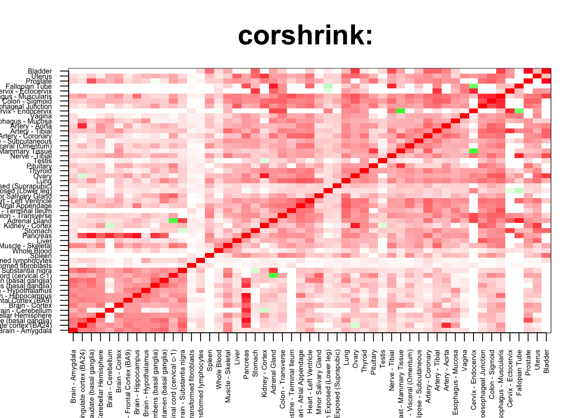
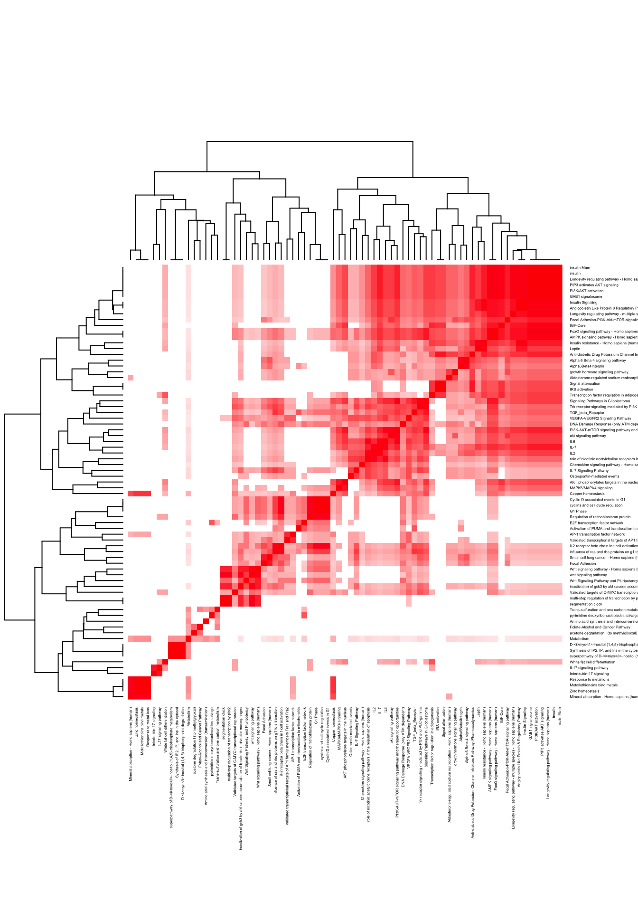
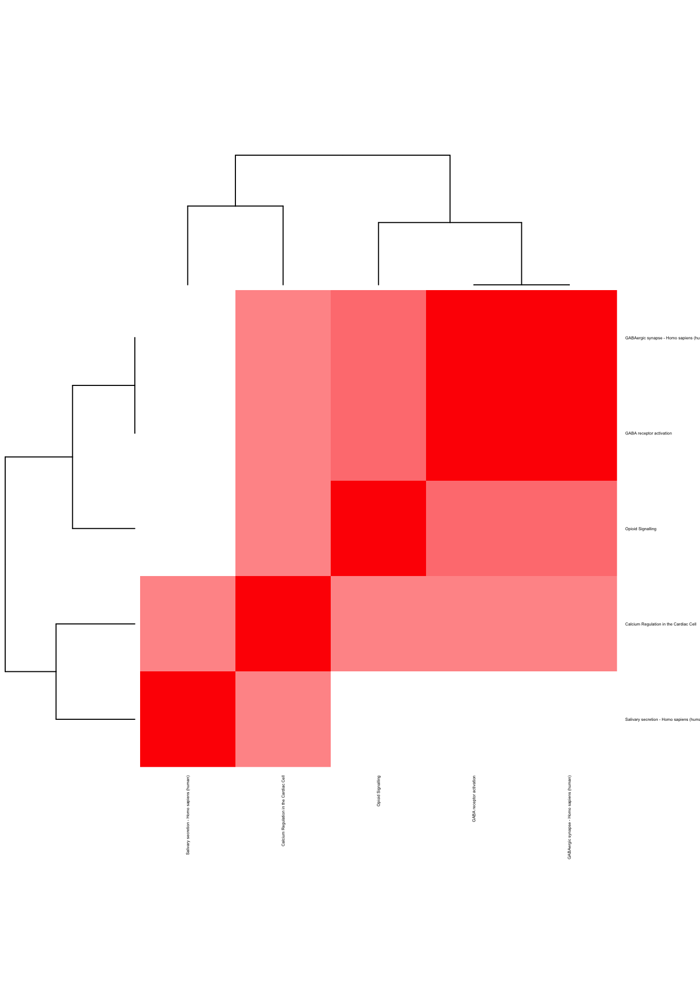

rm(list=ls())
corshrink_data <- get(load("../output/genewide_ash_out_tissue_mat.rda"))
cor_data <- get(load("../output/cor_tissues_non_ash_voom_pearson.rda"))common_samples <- get(load("../output/common_samples.rda"))
tissue_labels <- read.table(file = "../data/GTEX_V6/samples_id.txt")[,3]
#library(data.table)
#data <- data.frame(fread("../data/GTEX_V6/cis_gene_expression.txt"))
#matdata <- t(data[,-c(1,2)])
gene_names <- as.character(read.table(file = "../data/GTEX_V6/gene_names_GTEX_V6.txt")[,1])
gene_names_1 <- as.character(sapply(gene_names, function(x) return(strsplit(x, "[.]")[[1]][1])))
U <- unique(tissue_labels)tab <- array(0, dim(corshrink_data)[3])
skin_set <- grep("Skin", U)
for(m in 1:dim(corshrink_data)[3]){
temp <- corshrink_data[skin_set, skin_set,m]
temp1 <- corshrink_data[order_index[-(1:13)], order_index[-(1:13)],m]
tab[m] <- median(temp[row(temp) > col(temp)]) - median(temp1[row(temp1) > col(temp1)])
}
ordering_high <- order(tab, decreasing = TRUE)[1:100]
ordering_low <- order(tab, decreasing = FALSE)[1:100]top_gene <- gene_names_1[ordering_high[1]]
col=c(rev(rgb(seq(1,0,length=1000),1,seq(1,0,length=1000))),
rgb(1,seq(1,0,length=1000),seq(1,0,length=1000)))
image(as.matrix(corshrink_data[order_index,order_index, ordering_high[1]]),
col=col, main=paste0("corshrink: "), cex.main=2,
xaxt = "n", yaxt = "n", zlim=c(-1,1))
axis(1, at = seq(0, 1, length.out = 53), labels = U[order_index], las=2, cex.axis = 0.5)
axis(2, at = seq(0, 1, length.out = 53), labels = U[order_index], las=2, cex.axis = 0.5)
bottom_gene <- gene_names_1[ordering_low[1]]
col=c(rev(rgb(seq(1,0,length=1000),1,seq(1,0,length=1000))),
rgb(1,seq(1,0,length=1000),seq(1,0,length=1000)))
image(as.matrix(corshrink_data[order_index,order_index, ordering_low[1]]),
col=col, main=paste0("corshrink: "), cex.main=2,
xaxt = "n", yaxt = "n", zlim=c(-1,1))
axis(1, at = seq(0, 1, length.out = 53), labels = U[order_index], las=2, cex.axis = 0.5)
axis(2, at = seq(0, 1, length.out = 53), labels = U[order_index], las=2, cex.axis = 0.5)
high_skin_nonskin_2_genes <- gene_names_1[ordering_high]
low_skin_nonskin_2_genes <- gene_names_1[ordering_low]
write.table(cbind.data.frame(high_skin_nonskin_2_genes), quote = FALSE, file = "../utilities/skin_nonskin_2/high_skin_nonskin_2.txt", row.names = FALSE, col.names = FALSE)
write.table(cbind.data.frame(low_skin_nonskin_2_genes), quote = FALSE, file = "../utilities/skin_nonskin_2/low_skin_nonskin_2.txt", row.names = FALSE, col.names = FALSE)tab <- read.delim("../utilities/skin_nonskin_2/pathway_high.tab")
head(cbind.data.frame(tab$pathway, tab$q.value), 100)## tab$pathway
## 1 IL-7
## 2 Copper homeostasis
## 3 Longevity regulating pathway - multiple species - Homo sapiens (human)
## 4 DNA Damage Response (only ATM dependent)
## 5 inactivation of gsk3 by akt causes accumulation of b-catenin in alveolar macrophages
## 6 akt signaling pathway
## 7 E2F transcription factor network
## 8 Transcription factor regulation in adipogenesis
## 9 IGF-Core
## 10 wnt signaling pathway
## 11 Synthesis of IP2, IP, and Ins in the cytosol
## 12 Metallothioneins bind metals
## 13 Response to metal ions
## 14 D-<i>myo</i>-inositol (1,4,5)-trisphosphate degradation
## 15 Validated transcriptional targets of AP1 family members Fra1 and Fra2
## 16 VEGFA-VEGFR2 Signaling Pathway
## 17 AMPK signaling pathway - Homo sapiens (human)
## 18 insulin
## 19 insulin Mam
## 20 Angiopoietin Like Protein 8 Regulatory Pathway
## 21 role of nicotinic acetylcholine receptors in the regulation of apoptosis
## 22 FoxO signaling pathway - Homo sapiens (human)
## 23 il-2 receptor beta chain in t cell activation
## 24 superpathway of D-<i>myo</i>-inositol (1,4,5)-trisphosphate metabolism
## 25 Longevity regulating pathway - Homo sapiens (human)
## 26 Mineral absorption - Homo sapiens (human)
## 27 Wnt Signaling Pathway and Pluripotency
## 28 cyclins and cell cycle regulation
## 29 growth hormone signaling pathway
## 30 pyrimidine deoxyribonucleosides salvage
## 31 IRS activation
## 32 Insulin Signaling
## 33 segmentation clock
## 34 Focal Adhesion-PI3K-Akt-mTOR-signaling pathway
## 35 IL-7 Signaling Pathway
## 36 Insulin resistance - Homo sapiens (human)
## 37 Leptin
## 38 TGF_beta_Receptor
## 39 Regulation of retinoblastoma protein
## 40 influence of ras and rho proteins on g1 to s transition
## 41 Anti-diabetic Drug Potassium Channel Inhibitors Pathway, Pharmacodynamics
## 42 multi-step regulation of transcription by pitx2
## 43 PI3K-AKT-mTOR signaling pathway and therapeutic opportunities
## 44 Amino acid synthesis and interconversion (transamination)
## 45 Trans-sulfuration and one carbon metabolism
## 46 IL17 signaling pathway
## 47 Chemokine signaling pathway - Homo sapiens (human)
## 48 AP-1 transcription factor network
## 49 Metabolism
## 50 PIP3 activates AKT signaling
## 51 Alpha6Beta4Integrin
## 52 Osteopontin-mediated events
## 53 White fat cell differentiation
## 54 Focal Adhesion
## 55 Folate-Alcohol and Cancer Pathway
## 56 acetone degradation I (to methylglyoxal)
## 57 Interleukin-17 signaling
## 58 PI3K/AKT activation
## 59 GAB1 signalosome
## 60 Validated targets of C-MYC transcriptional repression
## 61 Alpha 6 Beta 4 signaling pathway
## 62 IL6
## 63 IL2
## 64 AKT phosphorylates targets in the nucleus
## 65 Activation of PUMA and translocation to mitochondria
## 66 Trk receptor signaling mediated by PI3K and PLC-gamma
## 67 Zinc homeostasis
## 68 Signaling Pathways in Glioblastoma
## 69 Wnt signaling pathway - Homo sapiens (human)
## 70 Signal attenuation
## 71 Cyclin D associated events in G1
## 72 G1 Phase
## 73 MAPK6/MAPK4 signaling
## 74 Aldosterone-regulated sodium reabsorption - Homo sapiens (human)
## 75 Small cell lung cancer - Homo sapiens (human)
## 76 Downstream signaling events of B Cell Receptor (BCR)
## 77 CYP2E1 reactions
## 78 NAD metabolism, sirtuins and aging
## 79 insulin signaling pathway
## 80 Retinoblastoma (RB) in Cancer
## 81 IL-2 Signaling Pathway
## 82 PI3K/AKT Signaling in Cancer
## 83 Collagen formation
## 84 Selenoamino Acid Metabolism
## 85 Insulin Pathway
## 86 Presenilin action in Notch and Wnt signaling
## 87 BDNF
## 88 Antimetabolite Pathway - Folate Cycle, Pharmacodynamics
## 89 IL6-mediated signaling events
## 90 Inositol phosphate metabolism
## 91 Phosphatidylinositol signaling system - Homo sapiens (human)
## 92 Type II diabetes mellitus - Homo sapiens (human)
## 93 Chemokine signaling pathway
## 94 AGE-RAGE signaling pathway in diabetic complications - Homo sapiens (human)
## 95 Inositol Phosphate Metabolism
## 96 One carbon metabolism and related pathways
## 97 Vitamin B12 Metabolism
## 98 pten dependent cell cycle arrest and apoptosis
## 99 Leucine Stimulation on Insulin Signaling
## 100 Methotrexate Pathway (Cancer Cell), Pharmacodynamics
## tab$q.value
## 1 0.0001727465
## 2 0.0001727465
## 3 0.0002856123
## 4 0.0002936209
## 5 0.0002936209
## 6 0.0002936209
## 7 0.0003375226
## 8 0.0003645000
## 9 0.0003645000
## 10 0.0012429175
## 11 0.0012429175
## 12 0.0013963134
## 13 0.0013963134
## 14 0.0016783962
## 15 0.0019717605
## 16 0.0019717605
## 17 0.0021708535
## 18 0.0022795198
## 19 0.0025837744
## 20 0.0025837744
## 21 0.0025837744
## 22 0.0025837744
## 23 0.0033781077
## 24 0.0037881946
## 25 0.0039660717
## 26 0.0040842843
## 27 0.0047550887
## 28 0.0047550887
## 29 0.0047550887
## 30 0.0047550887
## 31 0.0047550887
## 32 0.0048090895
## 33 0.0048090895
## 34 0.0049123688
## 35 0.0051307876
## 36 0.0054734741
## 37 0.0056563386
## 38 0.0061597163
## 39 0.0061597163
## 40 0.0061597163
## 41 0.0061597163
## 42 0.0066785100
## 43 0.0067506836
## 44 0.0067506836
## 45 0.0067506836
## 46 0.0067506836
## 47 0.0067506836
## 48 0.0067506836
## 49 0.0067506836
## 50 0.0067506836
## 51 0.0067506836
## 52 0.0067506836
## 53 0.0067506836
## 54 0.0067506836
## 55 0.0067506836
## 56 0.0067506836
## 57 0.0067506836
## 58 0.0067506836
## 59 0.0067506836
## 60 0.0067506836
## 61 0.0067506836
## 62 0.0069417618
## 63 0.0071791512
## 64 0.0080399038
## 65 0.0080399038
## 66 0.0080620257
## 67 0.0086059576
## 68 0.0090875625
## 69 0.0090875625
## 70 0.0090875625
## 71 0.0090875625
## 72 0.0090875625
## 73 0.0090875625
## 74 0.0090875625
## 75 0.0095482574
## 76 0.0099650278
## 77 0.0100293376
## 78 0.0100293376
## 79 0.0100293376
## 80 0.0101562707
## 81 0.0102974993
## 82 0.0103235586
## 83 0.0110546054
## 84 0.0112756047
## 85 0.0119766878
## 86 0.0124650140
## 87 0.0124650140
## 88 0.0126714517
## 89 0.0128168743
## 90 0.0128168743
## 91 0.0131691839
## 92 0.0133178279
## 93 0.0134696621
## 94 0.0135380636
## 95 0.0135380636
## 96 0.0135380636
## 97 0.0146044163
## 98 0.0146044163
## 99 0.0146044163
## 100 0.0146044163pathway2 <- read.delim("../utilities/skin_nonskin_2/pathway_high.tab")
if(length(which(pathway2$q.value < 0.05)) > 2){
pathway2 <- pathway2[which(pathway2$q.value < 0.05),]
}
maxpath = 75
pathway <- pathway2[1:min(maxpath, dim(pathway2)[1]), ]
ensembl_genes <- pathway$members_input_overlap
pathway_list_genes <- sapply(ensembl_genes, function(x) return(strsplit(as.character(x), "; ")))
all_genes <- Reduce(union, pathway_list_genes)
pathway_mat <- matrix(0, length(pathway_list_genes), length(all_genes))
for(l in 1:dim(pathway_mat)[1]){
pathway_mat[l, match(pathway_list_genes[[l]], all_genes)] <- 1
}
pathway_bimat <- (pathway_mat)%*%t(pathway_mat)
pathway_bimat_prop <- diag(1/sqrt(diag(pathway_bimat)), dim(pathway_bimat)[1]) %*% pathway_bimat %*% diag(1/sqrt(diag(pathway_bimat)), dim(pathway_bimat)[1])
col=c(rev(rgb(seq(1,0,length=1000),1,seq(1,0,length=1000))),
rgb(1,seq(1,0,length=1000),seq(1,0,length=1000)))
heatmap(pathway_bimat_prop, labRow = pathway$pathway, labCol = pathway$pathway, cexRow = 0.3, cexCol = 0.3, col = col, zlim = c(-1,1),
scale = "none", margins = c(5, 5))
tab <- read.delim("../utilities/skin_nonskin_2/GO_high.tab")
head(cbind.data.frame(tab$term_name, tab$q.value), 100)## tab$term_name
## 1 response to alcohol
## 2 response to corticosteroid
## 3 response to ketone
## 4 response to ethanol
## 5 response to organonitrogen compound
## 6 response to nitrogen compound
## 7 single-organism cellular process
## 8 response to oxygen-containing compound
## 9 single-organism biosynthetic process
## 10 positive regulation of establishment of protein localization
## 11 cell motility
## 12 localization of cell
## 13 regulation of signaling
## 14 oxoacid metabolic process
## 15 organic acid metabolic process
## 16 cytoplasm
## 17 response to drug
## 18 single-organism metabolic process
## 19 small molecule metabolic process
## 20 enzyme binding
## 21 response to extracellular stimulus
## 22 regulation of cell communication
## 23 response to organic substance
## 24 cell maturation
## 25 carbohydrate homeostasis
## 26 response to cytokine
## 27 single-multicellular organism process
## 28 lymphocyte chemotaxis
## 29 response to chemical
## 30 cellular response to peptide
## 31 phosphatase binding
## 32 cytoplasmic part
## 33 transformation of host cell by virus
## 34 positive regulation of cellular component movement
## 35 response to inorganic substance
## 36 response to insulin
## 37 response to vitamin
## 38 response to acid chemical
## 39 response to hormone
## 40 regulation of signal transduction
## 41 oocyte maturation
## 42 response to nutrient levels
## 43 insulin binding
## 44 response to erythropoietin
## 45 cell proliferation
## 46 cytokine-mediated signaling pathway
## 47 transferase activity, transferring phosphorus-containing groups
## 48 protein kinase binding
## 49 regulation of localization
## 50 response to tumor necrosis factor
## 51 regulation of cellular component movement
## 52 regulation of locomotion
## 53 protein phosphatase binding
## 54 positive regulation of multicellular organismal process
## 55 inositol phosphate metabolic process
## 56 response to endogenous stimulus
## 57 response to hyperoxia
## 58 response to increased oxygen levels
## 59 cellular response to chemical stimulus
## 60 alpha-amino acid biosynthetic process
## 61 modulation of synaptic transmission
## 62 animal organ development
## 63 movement of cell or subcellular component
## 64 phosphatidylinositol 3-kinase binding
## 65 cellular response to cytokine stimulus
## 66 multicellular organism metabolic process
## 67 cell migration
## 68 neuron death
## 69 regulation of response to stimulus
## 70 cellular response to organonitrogen compound
## 71 negative regulation of biological process
## 72 regulation of establishment of protein localization
## 73 regulation of protein localization
## 74 taurine metabolic process
## 75 lymphocyte migration
## 76 phosphorylation
## 77 cellular response to peptide hormone stimulus
## 78 cell death
## 79 regulation of cell motility
## 80 response to steroid hormone
## 81 alkanesulfonate metabolic process
## 82 interleukin-17 receptor activity
## 83 kinase binding
## 84 phosphate-containing compound metabolic process
## 85 regulation of Wnt signaling pathway
## 86 multicellular organism development
## 87 kinase activity
## 88 phospholipid metabolic process
## 89 peptide hormone binding
## 90 cellular amino acid biosynthetic process
## 91 regulation of lymphocyte migration
## 92 G1/S transition of mitotic cell cycle
## 93 regulation of carbohydrate biosynthetic process
## 94 regulation of reactive oxygen species metabolic process
## 95 regulation of protein metabolic process
## 96 developmental maturation
## 97 regulation of growth
## 98 chemical homeostasis
## 99 cellular response to organic substance
## 100 positive regulation of locomotion
## tab$q.value
## 1 0.0004953664
## 2 0.0006591512
## 3 0.0004953664
## 4 0.0006591512
## 5 0.0006117099
## 6 0.0006117099
## 7 0.0006076212
## 8 0.0012835192
## 9 0.0014485132
## 10 0.0031953045
## 11 0.0006514442
## 12 0.0006514442
## 13 0.0014493927
## 14 0.0031953045
## 15 0.0014493927
## 16 0.0020794440
## 17 0.0014493927
## 18 0.0007468334
## 19 0.0014493927
## 20 0.0025989950
## 21 0.0015619369
## 22 0.0045468310
## 23 0.0015619369
## 24 0.0045468310
## 25 0.0066565344
## 26 0.0047007274
## 27 0.0012374136
## 28 0.0047007274
## 29 0.0012602431
## 30 0.0066565344
## 31 0.0061643743
## 32 0.0033974995
## 33 0.0066565344
## 34 0.0066565344
## 35 0.0032065772
## 36 0.0066565344
## 37 0.0069704678
## 38 0.0032694187
## 39 0.0032694187
## 40 0.0069704678
## 41 0.0032694187
## 42 0.0069704678
## 43 0.0041745919
## 44 0.0079917147
## 45 0.0020359249
## 46 0.0076333899
## 47 0.0041745919
## 48 0.0038123342
## 49 0.0038569823
## 50 0.0087421985
## 51 0.0078879241
## 52 0.0038569823
## 53 0.0038123342
## 54 0.0078879241
## 55 0.0038569823
## 56 0.0024510212
## 57 0.0038569823
## 58 0.0078879241
## 59 0.0038569823
## 60 0.0096951087
## 61 0.0087083430
## 62 0.0041892803
## 63 0.0041892803
## 64 0.0048855556
## 65 0.0101942919
## 66 0.0041892803
## 67 0.0042030582
## 68 0.0088737270
## 69 0.0042455950
## 70 0.0088737270
## 71 0.0042551619
## 72 0.0104248919
## 73 0.0088737270
## 74 0.0088737270
## 75 0.0044102000
## 76 0.0104248919
## 77 0.0104248919
## 78 0.0046885624
## 79 0.0098464366
## 80 0.0098464366
## 81 0.0052045509
## 82 0.0053751919
## 83 0.0112139559
## 84 0.0110117959
## 85 0.0118527936
## 86 0.0055054530
## 87 0.0112139559
## 88 0.0112843574
## 89 0.0073049043
## 90 0.0112843574
## 91 0.0118527936
## 92 0.0118527936
## 93 0.0118527936
## 94 0.0118527936
## 95 0.0118527936
## 96 0.0066164665
## 97 0.0066513652
## 98 0.0129171723
## 99 0.0129171723
## 100 0.0131878467tab <- read.delim("../utilities/skin_nonskin_2/pathway_low.tab")
head(cbind.data.frame(tab$pathway, tab$q.value), 100)## tab$pathway tab$q.value
## 1 Calcium Regulation in the Cardiac Cell 0.05332995
## 2 GABA receptor activation 0.05332995
## 3 Opioid Signalling 0.05332995
## 4 GABAergic synapse - Homo sapiens (human) 0.05332995
## 5 Salivary secretion - Homo sapiens (human) 0.05332995pathway2 <- read.delim("../utilities/skin_nonskin_2/pathway_low.tab")
if(length(which(pathway2$q.value < 0.05)) > 2){
pathway2 <- pathway2[which(pathway2$q.value < 0.05),]
}
maxpath = 75
pathway <- pathway2[1:min(maxpath, dim(pathway2)[1]), ]
ensembl_genes <- pathway$members_input_overlap
pathway_list_genes <- sapply(ensembl_genes, function(x) return(strsplit(as.character(x), "; ")))
all_genes <- Reduce(union, pathway_list_genes)
pathway_mat <- matrix(0, length(pathway_list_genes), length(all_genes))
for(l in 1:dim(pathway_mat)[1]){
pathway_mat[l, match(pathway_list_genes[[l]], all_genes)] <- 1
}
pathway_bimat <- (pathway_mat)%*%t(pathway_mat)
pathway_bimat_prop <- diag(1/sqrt(diag(pathway_bimat)), dim(pathway_bimat)[1]) %*% pathway_bimat %*% diag(1/sqrt(diag(pathway_bimat)), dim(pathway_bimat)[1])
col=c(rev(rgb(seq(1,0,length=1000),1,seq(1,0,length=1000))),
rgb(1,seq(1,0,length=1000),seq(1,0,length=1000)))
heatmap(pathway_bimat_prop, labRow = pathway$pathway, labCol = pathway$pathway, cexRow = 0.3, cexCol = 0.3, col = col, zlim = c(-1,1),
scale = "none", margins = c(5, 5))
tab <- read.delim("../utilities/skin_nonskin_2/GO_low.tab")
head(cbind.data.frame(tab$term_name, tab$q.value), 100)## tab$term_name tab$q.value
## 1 peptidoglycan binding 0.001114559
## 2 detection of external biotic stimulus 0.032114653
## 3 detection of biotic stimulus 0.040101543
## 4 carbohydrate derivative metabolic process 0.189626236
## 5 membrane raft 0.058164289
## 6 membrane microdomain 0.084819070This R Markdown site was created with workflowr